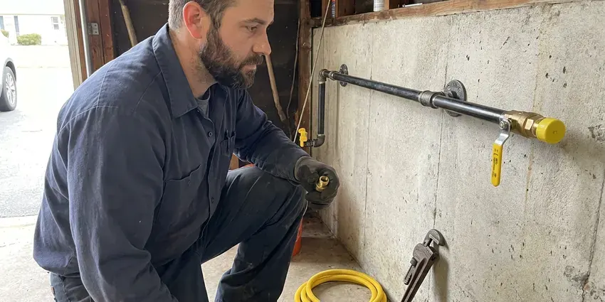

Basement Sump Pump Installation in Overland Park, KS
New sump pits, cast iron pumps and battery backups for Overland Park basements. KRV Plumbing sizes each pump to your actual inflow.
- Cast Iron Pumps On the Truck
- Flat-Rate Pricing
- Next-Day Pump Swaps
- Local Kansas Company

Get a New Sump Pit and Pump in Overland Park, KS
Tell us where the water comes in and we will bring the right pump.
Sump Pits and Pumps for Overland Park, KS Basements
KRV Plumbing has installed sump pumps all over Kansas, and the weather sets the workload. Kansas sees hot summers, cold winters, and fast temperature swings, which put steady stress on pipes, fittings, and water heaters. A pump that sits idle for months still has to start on the first call, so we pick switches and check valves that hold up through long idle stretches. Cast iron, not plastic.
Some of what we do:
- Tie-ins to interior perimeter drain tile
- Battery backup installs with a load test
- Primary and battery backup pumps sharing one pit

Additional Plumbing Installation Services in Overland Park, KS
We install water heaters, pumps, lines, and fixtures across Overland Park, KS with precision workmanship that meets every local code.




Gas Line Installation near Overland Park

Customers
Why Choose KRV Plumbing for Basement Sump Pump Installation in Overland Park, KS?
Local codes and weather in Kansas both shape the job. Our plumbers know what the inspector checks on a discharge line, and we know how deep your pit should be for the soil it sits in, which matters more than the brand name on the pump. Pit depth comes before pump choice.
- Drier Air, A dry basement has far less mold and mildew, and the whole house smells better for it.
- Quality Equipment, Cast iron pumps from Zoeller, Liberty and Wayne, not bargain plastic units.
- Code Compliant, Every install follows Kansas plumbing and electrical codes, with a permit when one is needed.
Citywide Coverage
We serve Overland Park and the surrounding towns for sump pump installation. Hillside lots need different discharge routes than flat ones, and we plan the exit point around your grading, HOA rules and where the neighbor's yard sits before we cut any pipe. That avoids complaints.
Experienced Team
Pedestal pumps, submersibles, battery backups and duplex panels are all routine for our team. They stay current on new switch and alarm designs, because a pump is only as good as the switch that tells it to start, and switch failure is still the most common reason a basement floods with a working motor sitting in the pit. Switches fail first.
Safety-First Approach
Sealed lids matter more than most people think. A gasketed, vented lid keeps radon and moisture out, and it stops odors from the pit from drifting into the basement, which is a common complaint with the open pits we find in older homes. It keeps small kids out of the pit.
Trusted Certified Overland Park Plumbing Services Professionals
At KRV Plumbing, we take pride in licensed, certified plumbing services throughout Overland Park, KS. Those papers on the wall mean something. Every repair, install and maintenance visit follows strict safety and quality rules, and the plumbers doing the work carry recognized industry credentials.
Call Us Now PHCC Plumbing Contractor Recognition
PHCC Plumbing Contractor Recognition Better Business Bureau (BBB) Accreditation
Better Business Bureau (BBB) Accreditation Angi Certified Pro
Angi Certified Pro ISO 9001 Quality Management Certification
ISO 9001 Quality Management CertificationSump Pits, Pumps and Backups in Overland Park, KS
Residential Basement Sump Pump Installation in Overland Park
A typical house pit holds an 18 by 22 inch basin with a 1/3 horsepower pump, and that covers most homes. Our plumbers size the unit to the water coming in and the height it has to climb, not to the sale sticker. In Overland Park, we set the basin at the low corner, bed it in washed gravel and run 1-1/2 inch PVC out through the rim joist. Discharge gets carried far enough out that it cannot soak back toward the wall.

New Sump Pit Excavation in Overland Park
No pit yet? First we locate the low point where water gathers, saw cut the slab, dig roughly 24 to 30 inches deep, and set a liner surrounded by washed gravel so water can enter while fine soil stays out. New concrete goes back flush and level.
Sump Basin and Discharge Line Installation in Overland Park
The basin sets the ceiling on what the pump can do. It goes at the lowest point in the slab, bed it in washed stone, and run the discharge line with a slight pitch to the exit point so nothing sits in the pipe in Overland Park. Water should never come back.
Same-Day Sump Pump Installation in Overland Park
Same-day emergency installs cover pumps that quit in the middle of a storm. We remove standing water from the pit first, then set a new pump on a new check valve, plug it into a tested GFCI outlet and watch it run through several cycles before leaving your Overland Park basement. A backup is the next conversation.
Sump Pit Installation in Overland Park, KS
Pit size controls how often the pump starts. A small 15 inch pit makes the pump cycle every minute in heavy flow, so we usually install an 18 by 22 inch or 18 by 30 inch basin with a solid bottom and perforated sides wrapped in filter fabric. Less cycling, longer life.
Quiet Submersible Pumps for Finished Basements in Overland Park
Finished basements call for a quiet pump and a sealed lid. Pairing a submersible with a gasketed cover cuts noise and odor, and we route the discharge behind framing or through a closet so the pipe does not run across a wall you just painted in your Overland Park home. We patch the slab flush.
Sump Pump Installation Cost Comparison in Overland Park, KS
Pricing starts with whether you already have a pit. Swapping a pump in an existing basin is the cheapest job, while a new pit adds saw cutting, digging and a concrete patch, and a battery backup adds the second pump and battery on top of that. Each line is itemized.

Discharge Line and Check Valve Installation in Overland Park
Rigid PVC carries the water from the pump out through the rim joist and at least 10 feet from the house. A spring check valve stops the column from falling back into the pit, which cuts motor run time and the loud thunk you hear after every cycle. Many Kansas homeowners let faucets drip and open cabinet doors on the coldest nights to keep water moving. Where lines can freeze, we fit a freeze-resistant outlet.
Basement Sump Pump Installation Near Me in Overland Park, KS
Homeowners in Overland Park and the towns around it call us when the old pump starts cycling every few minutes or stops altogether. We are local, so we get there fast, often the same day, with pumps and liners on the truck. That saves a second trip.
Local plumbers look past the pump. We also look at the grading and the downspouts, because a downspout dumping beside the foundation can send more water into your pit than the groundwater does on a rainy day in Overland Park. Fixing that is cheap.
KRV Plumbing at a Glance
- Fully licensed plumbing team covering Overland Park, KS
- Same-day appointments and 24/7 emergency response
- Upfront, flat-rate pricing before work begins
- 4.9-star rated by 910+ Kansas customers
Overland Park Map
Overland Park Information
- Population
- 197,089
- Area codes
- 913/785/660
- Service area
- Overland Park and communities within 40 miles
- Nearby
- Leawood, Olathe, Prairie Village, Lenexa
Hydrostatic pressure pushes groundwater through slab cracks and the cove joint where floor meets wall. A sump pump in Overland Park, KS homes grabs that water before it spreads.
Talk to a Plumber
Call KRV Plumbing for honest, reliable plumbing from people who know the trade in Overland Park, KS.
Our Specialized Plumbing Services in Overland Park, KS
At KRV Plumbing, you get every kind of plumbing service from one company across Overland Park, KS. We go from leak detection all the way to full system installations, for homes and commercial buildings, and we do it quickly at a fair price. Here are the core services we offer:


What a Sump Pump Install Looks Like in Overland Park, KS
From the first call to the bucket test, here is what to plan for.
Request a Quote
Call (316) 229-8459 and tell us where water is coming in and whether you have a pit now. We schedule a visit and quote a price before any work starts.
Inspect and Size
We check the pit, the inflow rate, the vertical lift and the outlet, then recommend a pump and a backup option. You approve the plan and price in writing.
Install and Test
We set the pump, check valve and discharge line, then fill the pit to confirm the float and flow work right. We show you how to test it each season.
Frequently Asked Questions About Basement Sump Pump Installation in Overland Park
Replacing a pump in an existing pit usually runs $500 to $1,200 including the pump and check valve. Cutting a new pit through the slab typically costs $1,500 to $3,500, and a battery backup adds roughly $600 to $1,500. The backup is a common add.
A straight pump replacement generally goes without a permit. New pits, new discharge routes and new circuits may, so we check the local rules and pull permits when they apply.
Homes from the late seventies through the mid nineties may have polybutylene supply pipe, which is prone to sudden failure. Slab homes without a basement rarely need a pump. Basements and below-grade rooms are a different case, since they can take on water fast during heavy storms, especially where the ground sheds rain rather than soaking it up. A pit costs less than a cleanup.
A primary pump does the everyday work. A secondary pump, often on a battery, waits in the same pit, and it kicks on if the primary fails, loses power, or gets overwhelmed by more water than it can move during a heavy storm. Two pumps, two check valves.
Grinding or rattling during a cycle is the first warning. Rust on the housing and constant on-off cycling are others, along with a pump that does not start during a heavy rain even though the pit is full to the float. After about ten years, plan on replacing it.
We strongly recommend professional installation. You are dealing with wiring, pipe and concrete in one job, and a bad seal on the lid, an undersized pit or a discharge that drains toward the house can leave you worse off than having no pump at all. Mistakes show up in storms.
Zoeller, Wayne, Little Giant and Liberty Pumps cover most of our installs. We pick the model by horsepower and lift, then by features like a vertical float or a built-in alarm, so the pump fits your pit, your budget and the amount of water your Overland Park basement actually takes on. We default to cast iron.
Kansas leaves plumbing code adoption to cities and counties, and most local jurisdictions use a national model plumbing code. New pits, new circuits and new discharge routes are the parts most likely to need a plumbing permit. The local requirements get checked before we start, and when a permit applies we pull it and schedule the inspection ourselves. You do not deal with the office.
What People Are Saying About Our Plumbing Experts?

Laura S.
Our 40 gallon tank started leaking from the bottom after thirteen years. The tech hauled the old one out, set a new unit with a fresh expansion tank, and had hot water running in about four hours. He took the old tank with him too.
Water Heater Replacement · Prairie Village, KS
Kevin O.
Before buying our house I paid for a sewer camera inspection. KRV Plumbing found a belly in the line that held standing water about forty feet from the cleanout. We used the video to get the sellers to fix it before closing.
Sewer Camera Inspection · Gardner, KSJames P.
Our restaurant had a slow leak at the hand sink that was rotting the cabinet base. KRV Plumbing came in at six in the morning before prep, replaced the trap and both supply lines, and was packed up before my first cook clocked in.
Commercial Plumbing · Overland Park, KS
Mark T.
The floor drain in our office break room backed up every few weeks. The plumber ran a cable, then put a camera down and found roots at a joint about thirty feet out. Seeing it on the screen made the decision easy.
Drain Cleaning · Olathe, KSMarcus H.
Grease from the fryer line kept clogging the kitchen drain at my diner. KRV Plumbing hydro jetted the line after closing, showed me the buildup on camera, and set us up on a quarterly cleaning so it does not catch us on a Friday again.
Drain Cleaning · Lenexa, KS
Karen W.
After our third pinhole leak in copper, we stopped patching. KRV Plumbing gave us a written plan room by room and repiped the house in PEX while we stayed in it. The crew covered our floors every morning and cleaned up every night.
Repiping · Lenexa, KS